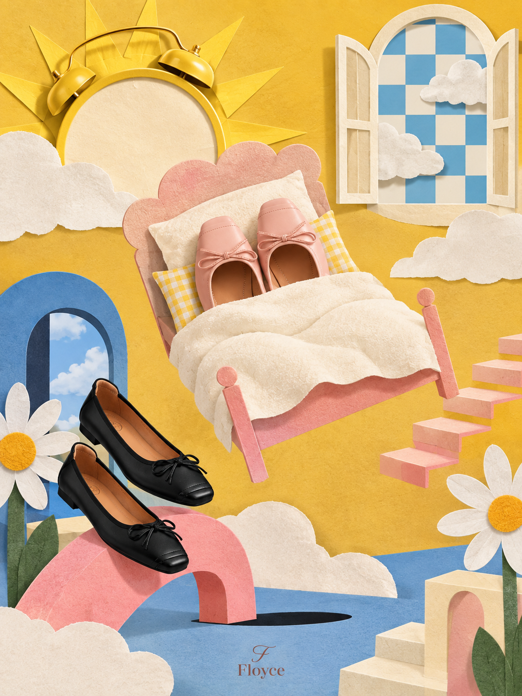
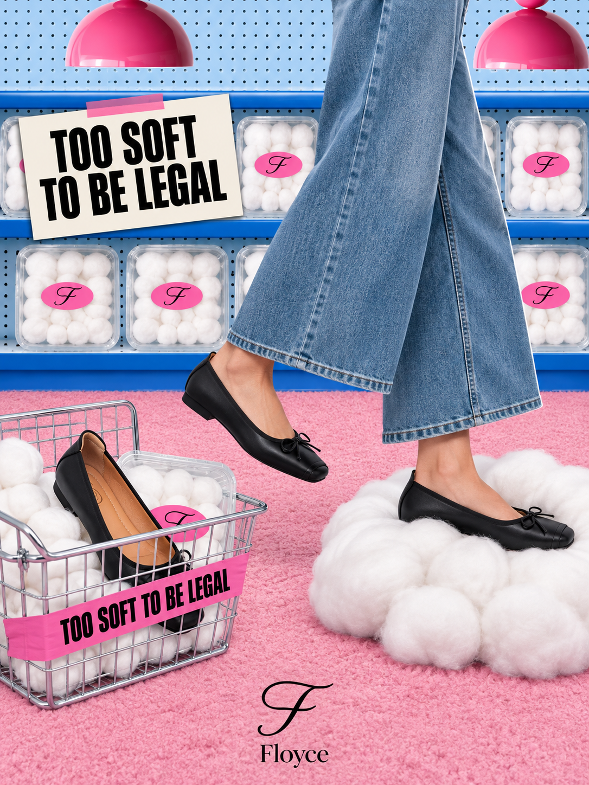
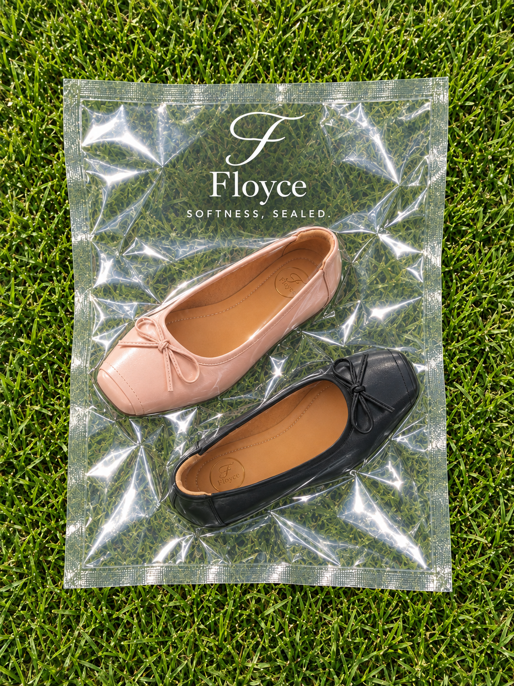
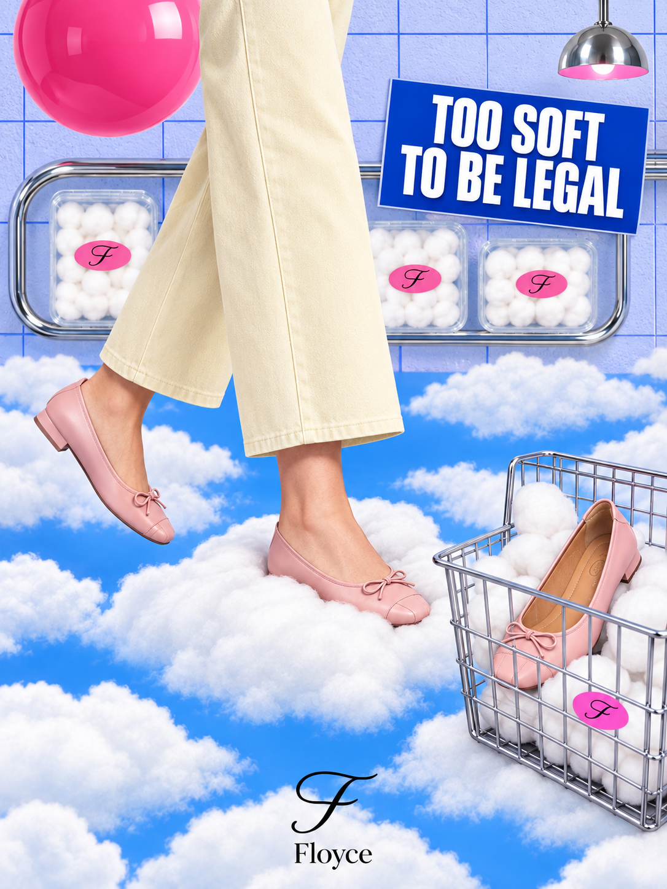

FLOYCE
Art Direction · Campaign Design · Content Creation
Overview
FLOYCE is a women’s footwear brand project focused on creating visual content that communicates the personality and qualities of its products. I worked across creative concept development, art direction, photography, video production, editing, motion graphics, and campaign design. Through a series of product-focused visuals and social media content, I developed playful and experimental ways to present the shoes while maintaining a consistent brand identity.



